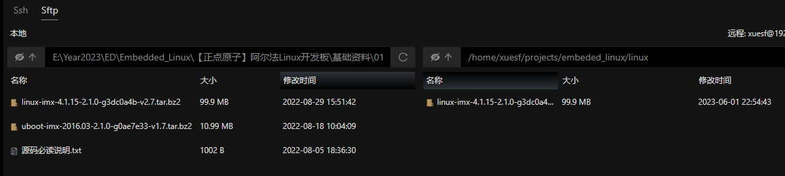
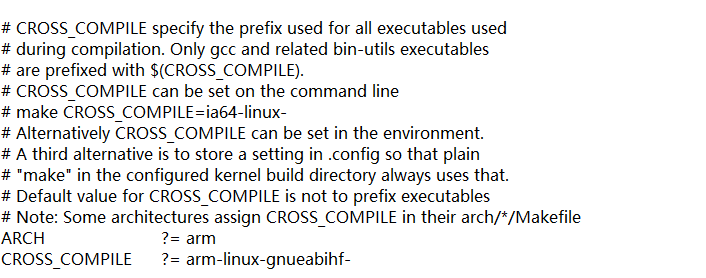

1. 前言
本文实现移植Linux到IMX6ULL芯片
1.1 参考资料
2. 配置交叉编译环境
推荐用ssh连接Ubuntu来开发 - 安装虚拟机：VMWare - 在虚拟机上安装Ubuntu - 本地Windows电脑安装electerm，此软件可通过ssh连接Ubuntu，兼具文件传输功能。
目前Ubuntu已经集成了arm-linux交叉编译工具，只需要执行命令sudo apt install gcc-arm-linux-gnueabihf即可安装，通过arm-linux-gnueabihf-gcc -v验证安装是否成功。
但是推荐以下方法
【Linux开发环境搭建】arm-linux-gnueabihf 交叉编译工具链安装
知识点:
修改/etc/profile文件后，需要重启系统才可以使环境变量生效。
3. U-Boot移植
重新做uboot是非常耗时且容易出错的，半导体厂商一般会自己做一个开发板，因此一般参考原厂开发板移植uboot。uboot移植的一般流程：
- 在uboot中找到参考的开发平台，一般是原厂的开发板。
- 参考原厂开发板，移植uboot到我们所使用的开发板上。
正点原子的 I.MX6ULL开发板参考的是 NXP官方的 I.MX6ULL EVK开发板做的硬件。
🧐错误
错误
在执行以下代码后报错。
make V=1 ARCH=arm CROSS_COMPILE=arm-linux-gnueabihf- -j16
arm-linux-gnueabihf-gcc: error: unrecognized -march target: armv5
arm-linux-gnueabihf-gcc: note: valid arguments are: armv4 armv4t armv5t armv5te armv5tej armv6 armv6j armv6k armv6z armv6kz armv6zk armv6t2 armv6-m armv6s-m armv7 armv7-a armv7ve armv7-r armv7-m armv7e-m armv8-a armv8.1-a armv8.2-a armv8.3-a armv8.4-a armv8.5-a armv8.6-a armv8-m.base armv8-m.main armv8-r armv8.1-m.main iwmmxt iwmmxt2; did you mean ‘armv4’?
arm-linux-gnueabihf-gcc: error: missing argument to ‘-march=’
make: *** [Makefile:924: u-boot.cfg] Error 1
解决
交叉编译工具版本不对，用这个方法安装后可行：【Linux开发环境搭建】arm-linux-gnueabihf 交叉编译工具链安装
参考
- https://blog.csdn.net/sinat_31039061/article/details/124544911
- NXP的uboot手册
- i.MX6ULL嵌入式Linux开发1-uboot移植初探
3.1 移植NXP官方的uboot到开发板
使用的NXP的uboot源码为uboot-imx-rel_imx_4.1.15_2.1.0_ga.tar.bz2，通过electerm等文件传输软件将其发送到Ubuntu系统。
解压
tar -jxvf uboot-imx-rel_imx_4.1.15_2.1.0_ga.tar.bz2
新建编译脚本
touch compile.sh
vim compile.sh
输入以下内容
#!/bin/bash
make ARCH=arm CROSS_COMPILE=arm-linux-gnueabihf- distclean
make ARCH=arm CROSS_COMPILE=arm-linux-gnueabihf- mx6ull_14x14_evk_emmc_defconfig
make V=1 ARCH=arm CROSS_COMPILE=arm-linux-gnueabihf- -j16
赋予compile.sh文件权限
sudo chmod 777 compile.sh
烧录到SD卡
方法1：
sudo dd if=u-boot.bin of=/dev/sdb bs=512 seek=1 conv=sync
参数解释
if=/path/to/uboot.bin 这里的if是input file的意思， 指定uboot文件。
of=/path/to/dev这里的of是output file的意思， 将uboot文件写入到的设备文件， 这里就要指定SD卡的设备文件。
bs=512这里的bs是block size的意思， 指定写入到块设备时， 每一块的大小， 单位是字节。 SD卡块设备默认是512字节
seek=1偏移量， 单位是块。这里偏移1块， 也就是偏移512字节后写入数据。因为文件分区表是512字节。
conv=sync 数据同步的方式
方法2：正点原子的下载工具imxdownload，其源码如下
chmod 777 imxdownload //给予 imxdownload可执行权限
./imxdownload u-boot.bin /dev/sdd //烧写到 SD卡中 ，不能烧写到 /dev/sda或 sda1里面
头文件
#ifndef _IMXDOWNLOAD_H
#define _IMXDOWNLOAD_H
/* IMX6U IVT DCD表信息 暂时定义为1K Bytes，此表是读取的u-boot.imx前1K Bytes
* imx6_ivedcd_table[9]是指明代码长度的，本应该根据实际的代码长度来修改
* 这里为了方便，就直接定义为2M Bytes，即
*/
const int imx6_512mb_ivtdcd_table[256] = {
0X402000D1,0X87800000,0X00000000,0X877FF42C,0X877FF420,0X877FF400,0X00000000,0X00000000,
0X877FF000,0X00200000,0X00000000,0X40E801D2,0X04E401CC,0X68400C02,0XFFFFFFFF,0X6C400C02,
0XFFFFFFFF,0X70400C02,0XFFFFFFFF,0X74400C02,0XFFFFFFFF,0X78400C02,0XFFFFFFFF,0X7C400C02,
0XFFFFFFFF,0X80400C02,0XFFFFFFFF,0XB4040E02,0X00000C00,0XAC040E02,0X00000000,0X7C020E02,
0X30000000,0X50020E02,0X30000000,0X4C020E02,0X30000000,0X90040E02,0X30000000,0X88020E02,
0X30000C00,0X70020E02,0X00000000,0X60020E02,0X30000000,0X64020E02,0X30000000,0XA0040E02,
0X30000000,0X94040E02,0X00000200,0X80020E02,0X30000000,0X84020E02,0X30000000,0XB0040E02,
0X00000200,0X98040E02,0X30000000,0XA4040E02,0X30000000,0X44020E02,0X30000000,0X48020E02,
0X30000000,0X1C001B02,0X00800000,0X00081B02,0X030039A1,0X0C081B02,0X0B000300,0X3C081B02,
0X44014801,0X48081B02,0X302C4040,0X50081B02,0X343E4040,0X1C081B02,0X33333333,0X20081B02,
0X33333333,0X2C081B02,0X333333F3,0X30081B02,0X333333F3,0XC0081B02,0X09409400,0XB8081B02,
0X00080000,0X04001B02,0X2D000200,0X08001B02,0X3030331B,0X0C001B02,0XF3526B67,0X10001B02,
0X630B6DB6,0X14001B02,0XDB00FF01,0X18001B02,0X40172000,0X1C001B02,0X00800000,0X2C001B02,
0XD2260000,0X30001B02,0X23106B00,0X40001B02,0X4F000000,0X00001B02,0X00001884,0X90081B02,
0X00004000,0X1C001B02,0X32800002,0X1C001B02,0X33800000,0X1C001B02,0X31800400,0X1C001B02,
0X30802015,0X1C001B02,0X40800004,0X20001B02,0X00080000,0X18081B02,0X27020000,0X04001B02,
0X2D550200,0X04041B02,0X06100100,0X1C001B02,0X00000000,0X00000000,0X00000000,0X00000000,
0X00000000,0X00000000,0X00000000,0X00000000,0X00000000,0X00000000,0X00000000,0X00000000,
0X00000000,0X00000000,0X00000000,0X00000000,0X00000000,0X00000000,0X00000000,0X00000000,
0X00000000,0X00000000,0X00000000,0X00000000,0X00000000,0X00000000,0X00000000,0X00000000,
0X00000000,0X00000000,0X00000000,0X00000000,0X00000000,0X00000000,0X00000000,0X00000000,
0X00000000,0X00000000,0X00000000,0X00000000,0X00000000,0X00000000,0X00000000,0X00000000,
0X00000000,0X00000000,0X00000000,0X00000000,0X00000000,0X00000000,0X00000000,0X00000000,
0X00000000,0X00000000,0X00000000,0X00000000,0X00000000,0X00000000,0X00000000,0X00000000,
0X00000000,0X00000000,0X00000000,0X00000000,0X00000000,0X00000000,0X00000000,0X00000000,
0X00000000,0X00000000,0X00000000,0X00000000,0X00000000,0X00000000,0X00000000,0X00000000,
0X00000000,0X00000000,0X00000000,0X00000000,0X00000000,0X00000000,0X00000000,0X00000000,
0X00000000,0X00000000,0X00000000,0X00000000,0X00000000,0X00000000,0X00000000,0X00000000,
0X00000000,0X00000000,0X00000000,0X00000000,0X00000000,0X00000000,0X00000000,0X00000000,
0X00000000,0X00000000,0X00000000,0X00000000,0X00000000,0X00000000,0X00000000,0X00000000,
0X00000000,0X00000000,0X00000000,0X00000000,0X00000000,0X00000000,0X00000000,0X00000000,
0X00000000,0X00000000,0X00000000,0X00000000,0X00000000,0X00000000,0X00000000,0X00000000
};
const int imx6_256mb_ivtdcd_table[256] = {
0X402000D1,0X87800000,0X00000000,0X877FF42C,0X877FF420,0X877FF400,0X00000000,0X00000000,
0X877FF000,0X00076000,0X00000000,0X40E801D2,0X04E401CC,0X68400C02,0XFFFFFFFF,0X6C400C02,
0XFFFFFFFF,0X70400C02,0XFFFFFFFF,0X74400C02,0XFFFFFFFF,0X78400C02,0XFFFFFFFF,0X7C400C02,
0XFFFFFFFF,0X80400C02,0XFFFFFFFF,0XB4040E02,0X00000C00,0XAC040E02,0X00000000,0X7C020E02,
0X30000000,0X50020E02,0X30000000,0X4C020E02,0X30000000,0X90040E02,0X30000000,0X88020E02,
0X30000C00,0X70020E02,0X00000000,0X60020E02,0X30000000,0X64020E02,0X30000000,0XA0040E02,
0X30000000,0X94040E02,0X00000200,0X80020E02,0X30000000,0X84020E02,0X30000000,0XB0040E02,
0X00000200,0X98040E02,0X30000000,0XA4040E02,0X30000000,0X44020E02,0X30000000,0X48020E02,
0X30000000,0X1C001B02,0X00800000,0X00081B02,0X030039A1,0X0C081B02,0X04000000,0X3C081B02,
0X3C013C01,0X48081B02,0X38324040,0X50081B02,0X28304040,0X1C081B02,0X33333333,0X20081B02,
0X33333333,0X2C081B02,0X333333F3,0X30081B02,0X333333F3,0XC0081B02,0X09409400,0XB8081B02,
0X00080000,0X04001B02,0X2D000200,0X08001B02,0X3030331B,0X0C001B02,0XF352433F,0X10001B02,
0X630B6DB6,0X14001B02,0XDB00FF01,0X18001B02,0X40172000,0X1C001B02,0X00800000,0X2C001B02,
0XD2260000,0X30001B02,0X23104300,0X40001B02,0X47000000,0X00001B02,0X00001883,0X90081B02,
0X00004000,0X1C001B02,0X32800002,0X1C001B02,0X33800000,0X1C001B02,0X31800400,0X1C001B02,
0X30802015,0X1C001B02,0X40800004,0X20001B02,0X00080000,0X18081B02,0X27020000,0X04001B02,
0X2D550200,0X04041B02,0X06100100,0X1C001B02,0X00000000,0X00000000,0X00000000,0X00000000,
0X00000000,0X00000000,0X00000000,0X00000000,0X00000000,0X00000000,0X00000000,0X00000000,
0X00000000,0X00000000,0X00000000,0X00000000,0X00000000,0X00000000,0X00000000,0X00000000,
0X00000000,0X00000000,0X00000000,0X00000000,0X00000000,0X00000000,0X00000000,0X00000000,
0X00000000,0X00000000,0X00000000,0X00000000,0X00000000,0X00000000,0X00000000,0X00000000,
0X00000000,0X00000000,0X00000000,0X00000000,0X00000000,0X00000000,0X00000000,0X00000000,
0X00000000,0X00000000,0X00000000,0X00000000,0X00000000,0X00000000,0X00000000,0X00000000,
0X00000000,0X00000000,0X00000000,0X00000000,0X00000000,0X00000000,0X00000000,0X00000000,
0X00000000,0X00000000,0X00000000,0X00000000,0X00000000,0X00000000,0X00000000,0X00000000,
0X00000000,0X00000000,0X00000000,0X00000000,0X00000000,0X00000000,0X00000000,0X00000000,
0X00000000,0X00000000,0X00000000,0X00000000,0X00000000,0X00000000,0X00000000,0X00000000,
0X00000000,0X00000000,0X00000000,0X00000000,0X00000000,0X00000000,0X00000000,0X00000000,
0X00000000,0X00000000,0X00000000,0X00000000,0X00000000,0X00000000,0X00000000,0X00000000,
0X00000000,0X00000000,0X00000000,0X00000000,0X00000000,0X00000000,0X00000000,0X00000000,
0X00000000,0X00000000,0X00000000,0X00000000,0X00000000,0X00000000,0X00000000,0X00000000,
0X00000000,0X00000000,0X00000000,0X00000000,0X00000000,0X00000000,0X00000000,0X00000000,
};
#endif
c文件
#include "stdio.h"
#include "stdlib.h"
#include "string.h"
#include "imxdownload.h"
#define SHELLCMD_LEN (200)
#define BIN_OFFSET (3072)
/* 此宏指明是否打印u-boot.imx的IVT DCD表信息，不同的开发板其IVT和DCD
* 表的数据是不同的，因此需要获取所使用的开发板的IVT和DCD表信息，最
* 简单的方法就是读取开发板配套资料里面的u-boot.imx的前1KB数据，理论上
* 应该读取3KB的数据，但是表信息远远没有3K这么多，因此读1KB即可
*/
#define PRINT_TAB 0
/*
* 介绍： 此软件是针对NXP的IMX6U系列芯片的，软件用来烧写bin文件到SD卡里面，
* 本软件会自动添加IVT、DCD等信息到原始的bin文件里面，主要用于裸机和uboot的烧写。
* 使用方法： 1、编译好原始的二进制bin文件，如，u-boot.bin等，并将编译好的.bin文件和本
* 软件放置到同一个目录下！！！！
* 2、执行命令sudo ./imxdownload <soucre_bin> <sd_device>
* 如烧写u-boot.bin到/dev/sdd中即可使用如下所示命令:
* sudo ./imxdownload u-boot.bin /dev/sdd
*/
/*
* 输出一些信息
*/
void message_print(void)
{
printf("I.MX6ULL bin download software\r\n");
printf("Edit by:zuozhongkai\r\n");
printf("Date:2019/6/10\r\n");
printf("Version:V1.1\r\n");
printf("log:V1.0 initial version,just support 512MB DDR3\r\n");
printf(" V1.1 and support 256MB DDR3\r\n");
}
int main(int argc, char *argv[])
{
FILE *fp;
unsigned char *buf;
unsigned char *cmdbuf;
int nbytes, filelen;
int i = 0, j = 0;
int ddrsize = 0; /* 0为512MB，1为256MB，2为128MB...... */
message_print();
if((argc != 3) && (argc != 4)){
printf("Error Usage! Reference Below:\r\n");
printf("sudo ./%s <-512m or -256m> <source_bin> <sd_device>\r\n", argv[0]);
return -1;
}
/* 查找参数，获取DDR容量 */
for(i = 0; i < argc; i++)
{
char *param = argv[i];
if(param[0] != '-')
continue;
if(strcmp(param, "-256m") == 0) /* 256MB */
ddrsize = 1;
else if(strcmp(param, "-512m") == 0) /* 512MB */
ddrsize = 0;
}
if(argc == 3) /* 三个参数，也就是不输入DDR容量的话默认为512MB */
ddrsize = 0;
/* 打开bin文件 */
fp = fopen(argv[1], "rb"); /* 以二进制只读方式打开bin文件 */
if(fp == NULL){
printf("Can't Open file %s\r\n", argv[1]);
return -1;
}
/* 获取bin文件长度 */
fseek(fp, 0L, SEEK_END);
filelen = ftell(fp);
fseek(fp, 0L, SEEK_SET);
printf("file %s size = %dBytes\r\n", argv[1], filelen);
/* 读取bin文件到缓冲区buf中 */
buf = malloc(filelen + BIN_OFFSET);
if(buf == NULL){
printf("Mem Malloc Failed!\r\n");
fclose(fp);
return -1;
}
memset(buf, 0, filelen + BIN_OFFSET); /* 清零 */
/* 读取bin源码文件 */
fread(buf + BIN_OFFSET, 1, filelen, fp);
/* 关闭文件 */
fclose(fp);
#if PRINT_TAB
printf("IVT DCD Table:\r\n");
for(i = 0; i < 1024/32; i++){
for(j = 0; j < 8; j++)
{
printf("0X%08X,",*(int *)(buf + BIN_OFFSET + (((i * 8) + j) * 4)));
}
printf("\r\n");
}
free(buf);
return 0;
#endif
/* 添加IVT DCD等表信息到bin文件里面 */
if(ddrsize == 0) { /* 512MB */
printf("Board DDR SIZE: 512MB\r\n");
memcpy(buf, imx6_512mb_ivtdcd_table, sizeof(imx6_512mb_ivtdcd_table));
}
else if (ddrsize == 1) { /* 256MB */
printf("Board DDR SIZE: 256MB\r\n");
memcpy(buf, imx6_256mb_ivtdcd_table, sizeof(imx6_256mb_ivtdcd_table));
}
/* 现在我们已经在buf中构建好了可以用于下载的bin文件，将buf中的数据保存到
* 到一个文件中，文件命名为load.imx
*/
printf("Delete Old load.imx\r\n");
system("rm -rf load.imx"); /* 先删除旧的load.imx文件 */
printf("Create New load.imx\r\n");
system("touch load.imx"); /* 创建新的load.imx文件 */
fp = fopen("load.imx", "wb"); /* 打开laod.imx */
if(fp == NULL){
printf("Cant't Open load.imx!!!\r\n");
free(buf);
return -1;
}
nbytes = fwrite(buf, 1, filelen + BIN_OFFSET, fp);
if(nbytes != (filelen + BIN_OFFSET)){
printf("File Write Error!\r\n");
free(buf);
fclose(fp);
return -1;
}
free(buf);
fclose(fp);
/* 构建烧写的shell命令 */
cmdbuf = malloc(SHELLCMD_LEN);
sprintf(cmdbuf, "sudo dd iflag=dsync oflag=dsync if=load.imx of=%s bs=512 seek=2",argv[2]);
printf("Download load.imx to %s ......\r\n", argv[2]);
/* 执行上面的shell命令 */
system(cmdbuf);
free(cmdbuf);
return 0;
}
4. Linux内核移植
4.1 Linux内核移植
和uboot移植一样，使用NXP官方的源码，首先将源码发送给Ubuntu

解压
tar -jxvf linux-imx-4.1.15-2.1.0-g3dc0a4b-v2.7.tar.bz2
修改顶层Makefile，将ARCH ?= arm和CROSS_COMPILE ?= arm-linux-gnueabihf-，如下所示

新建编译脚本
touch compile.sh
vim compile.sh
输入以下内容
#!/bin/bash
make clean
make imx_v7_mfg_defconfig
make -j16
赋予compile.sh文件权限
sudo chmod 777 compile.sh
执行编译
./compile.sh
4.2 网络调试
- Ubuntu配置TFTP服务器
nfs(Network File System)网络文件系统，通过 nfs可以在计算机之间通过网络来分享资源， 比如我们将 linux 镜像和设备树文件放到 Ubuntu中，然后在 uboot中使用 nfs命令将 Ubuntu中 的 linux 镜像和设备树下载到开发板的 DRAM中。这样做的目的是为了方便调试 linux镜像和 设备树，也就是网络调试，通过网络调试是 Linux开发中最常用的调试方法。原因是嵌入式 linux开发不像单片机开发，可以直接通过 JLINK或 STLink等仿真器将代码直接烧写到单片机内部 的 flash中，嵌入式 Linux通常是烧写到 EMMC、 NAND Flash、 SPI Flash等外置 flash中，但是 嵌入式 Linux开发也没有 MDK IAR这样的 IDE，更没有烧写算法，因此不可能通过点击一个 download”按钮就将固件烧写到外部 flash中。虽然半导体厂商一般都会提供一个烧写固件的 软件，但是这个软件使用起来比较复杂，这个烧写软件一般用于量产的。其远没有 MDK、 IAR的一键下载方便，在 Linux内核调试阶段，如果用这个烧写软件的话将会非常浪费时间，而这 个时候网络调试的优势就显现出来了，可以通过网络将编译好的 linux镜像和设备树文件下载 到 DRAM中，然后就可以直接运行。
tftp命令的作用和 nfs命令一样，都是用于通过网络下载东西到 DRAM中，只是 tftp命令 使用的 TFTP协议， Ubuntu主机作为 TFTP服务器。因此需要在 Ubuntu上搭建 TFTP服务器。
sudo apt-get install tftp-hpa tftpd-hpa
sudo apt-get install xinetd
和 NFS一样， TFTP也需要一个文件夹来存放文件，在用户目录下新建一个目录，命令如 下：
mkdir /home/zuozhongkai/linux/tftpboot
chmod 777 /home/zuozhongkai/linux/tftpboot
最后配置 tftp，安装完成以后新建文件 /etc/xinetd.d/tftp 如果没有 /etc/xinetd.d目录的话自行 创建， 然后在里面输入如下内容：
server tftp
{
socket_type = dgram
protocol = udp
wait = yes
user = root server = /usr/sbin/in.tftpd
server_args = -s /home/zuozhongkai/linux/tftpboot/
disable = no
per_source = 11
cps = 100 2
flags = IPv4
}
完了以后启动 tftp服务，命令如下： sudo service tftpd-hpa start 打开 /etc/default/tftpd-hpa文件，将其修改为如下所示内容：
# /etc/default/tftpd-hpa
TFTP_USERNAME="tftp"
TFTP_DIRECTORY="/home/zuozhongkai/linux/tftpboot"
TFTP_ADDRESS=":69"
TFTP_OPTIONS="-l -c -s"
TFTP_DIRECTORY就是我们上面创建的 tftp文件夹目录，以后我们就将所有需要通过 TFTP传输的文件都放到这个文件夹里面，并且要给予这些文件相应的权限。 最后输入如下命令， 重启 tftp服务器：
sudo service tftpd-hpa restart tftp服务器已经搭建好了，接下来就是使用了。
服务器已经搭建好了，接下来就是使用了。将 zImage镜像文件拷贝到 tftpboot文件夹 中，并且给予 zImage相应的权限，命令如下：
cp zImage /home/zuozhongkai/linux/tftpboot/
cd /home/zuozhongkai/linux/tftpboot/
chmod 777 zImage
uboot下设置好以下网络变量
setenv ipaddr 192.168.1.50
setenv ethaddr b8:ae:1d:01:00:00
setenv gatewayip 192.168.1.1
setenv netmask 255.255.255.0
setenv serverip 192.168.1253
saveenv
万事俱备，只剩验证了， uboot中的 tftp命令格式如下：
tftpboot [loadAddress] [[hostIPaddr:]bootfilename]
在开发板的控制台中，通过以下命令设置bootargs
setenv bootargs console=ttymxc0,115200 root=/dev/mmcblk1p2 rootwait rw
setenv bootcmd 'tftp 80800000 zImage; tftp 83000000 imx6ull-14x14-evk.dtb; bootz 80800000 - 83000000' //注意.dtb的文件名对应于tftp服务器的名字
saveenv
拷贝文件到tftpboot文件夹下
cp arch/arm/boot/zImage /home/xuesf/projects/linux/tftpboot/ -f
cp arch/arm/boot/dts/imx6ull-14x14-evk.dtb /home/xuesf/projects/linux/tftpboot/ -f
开发板的控制台中运行
tftp 80800000 zImage
tftp 83000000 imx6ull-14x14-evk.dtb
bootz 80800000 - 83000000
根文件系统移植
1、根文件系统简介
根文件系统（rootfs）首先是内核启动时所 mount(挂载 )的第一个文件系统，内核代码映像文件保存在根文件系统中，而系统引导启动程序会在根文件系统挂载之后从中把一些基本的初始化脚本和服务等加载到内存中去运行。
2、BusyBox构建根文件系统
已经知道根文件系统里面就是一堆的可执行文件和其他文件组成的，难道我们得一个一个的从网上去下载这些文件？显然这是不现实的！那么有没有人或者组织专门干这个事呢？他们负责“收集”这些文件，然后将其打包，像我们这样的开发者可以直接拿来用。答案是有的，它就叫做 BusyBox！其名字分为“Busy”和 Box”，也就是忙碌的盒子。盒子是用来放东西的，忙碌的是因为它要提供根文件系统所需的文件，所以忙碌。 BusyBox是一个集成了大量的 Linux命令和工具的软件，像 ls、 mv、 ifconfig等命令 BusyBox都会提供。 BusyBox就是一个大的工具箱，这个工具箱里面集成了Linux的许多工具和命令。一般下载BusyBox的源码，然后配置BusyBox，选择自己想要的功能，最后编译即可。
3、通过nfs测试根文件系统
（1）设置uboot启动linux的方式
uboot启动linux的方式有两种，分别是：从EMMC启动Linux系统 和 从网络启动Linux系统 ，下面我设置从第二种方式：
setenv bootcmd 'tftp 80800000 zImage; tftp 83000000 imx6ull-alientek-emmc.dtb; bootz 80800000 - 83000000'
saveenv
然后设置bootargs的root的值来实现根文件系统以nfs的方式挂载
setenv bootargs 'console=ttymxc0,115200 root=/dev/nfs nfsroot=192.168.1.242:/home/xuesf/projects/linux/nfs/rootfs,proto=tcp rw ip=192.168.1.184:192.168.1.242:192.168.1.1:255.255.255.0::eth0:off'
saveenv
报错
❌: mount: can't read '/etc/fstab': No such file or directory
✅: 注意检查文件的位置。
遇到的问题
- 🧐Ubuntu用ifconfig无法查看ip地址